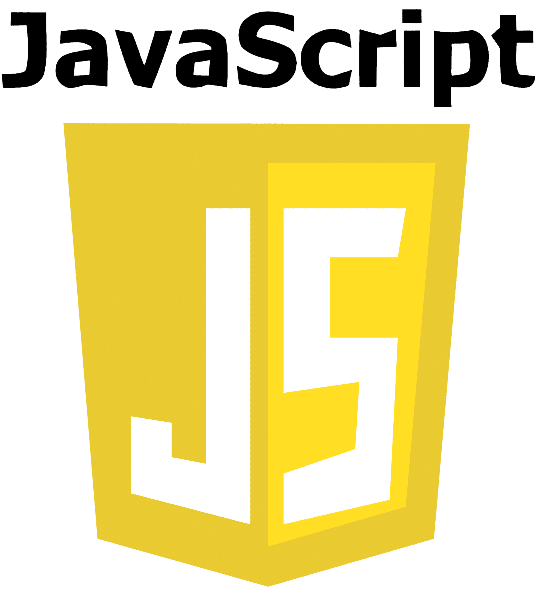

Elementos HTML
Alguns elementos utilizados para estruturar uma página são:
- h1 — título principal.
- p — parágrafo.
- a — link.
- img — imagem.
- ul — lista não ordenada.
Fundamentos de HTML, CSS e desenvolvimento Web.
O desenvolvimento Front-end está relacionado à parte de uma aplicação que o usuário visualiza e utiliza diretamente.
Para desenvolver uma aplicação Web é importante compreender estrutura, apresentação e comportamento.
HTML não é responsável por criar o design da página. Sua principal função é estruturar o conteúdo.
O desenvolvimento Front-end utiliza diferentes tecnologias que trabalham em conjunto
HTML define a estrutura, CSS trabalha a apresentação e JavaScript permite adicionar comportamentos.
HTML é uma linguagem de marcação utilizada para estruturar documentos Web.
Um documento HTML é composto por elementos. Por exemplo, o elemento p representa um parágrafo.
Já o elemento a pode ser utilizado para criar um link.
Alguns elementos utilizados para estruturar uma página são:
Os atributos fornecem informações adicionais sobre os elementos HTML
HTML semântico significa utilizar elementos que representam o significado do conteúdo.
Em vez de utilizar apenas div para toda a página, podemos utilizar elementos específicos para representar cada parte.
A tag div continua sendo útil para agrupamentos genéricos.
Este conteúdo está dentro de uma div porque não possui uma função semântica específica.
O HTML também possui elementos utilizados para representar o significado de pequenos trechos de texto.
A tag strong indica grande importância.
A tag em pode indicar ênfase em determinada informação
A tag mark pode destacar uma informação importante.
A tag small pode apresentar uma observação. Esta é uma informação complementar.
A API permite a comunicação entre diferentes sistemas
Uma fonte bastante conhecida para consulta é a MDN Web Docs.
Uma frase bastante conhecida entre programadores é: primeiro aprenda a pensar, depois aprenda a programar.
O conhecimento dos fundamentos é importante para compreender tecnologias mais complexas.
Este guia foi atualizado em
A próxima atualização ocorrerá em
Pequenos trechos de código podem ser representados utilizando code.
Por exemplo:<p>Olá, mundo!</p>
<h1>Olá, mundo!</h1> <p> Minha primeira página HTML. </p> <a href="https://www.w3.org/"> W3C </a>
Para salvar o arquivo utilize:Ctrl + S.
Para copiar utilize:Ctrl + C.
Para colar utilize: Ctrl + V.
Ao executar determinado programa, o sistema pode apresentar a seguinte mensagem:
Arquivo salvo com sucesso.
Outro exemplo de saída:
Erro: arquivo não encontrado.
Em programação, uma variável pode armazenar diferentes valores.
Considere a expressão:
x = 10
Podemos também representar:
x = 10y = 20resultado = x + y
